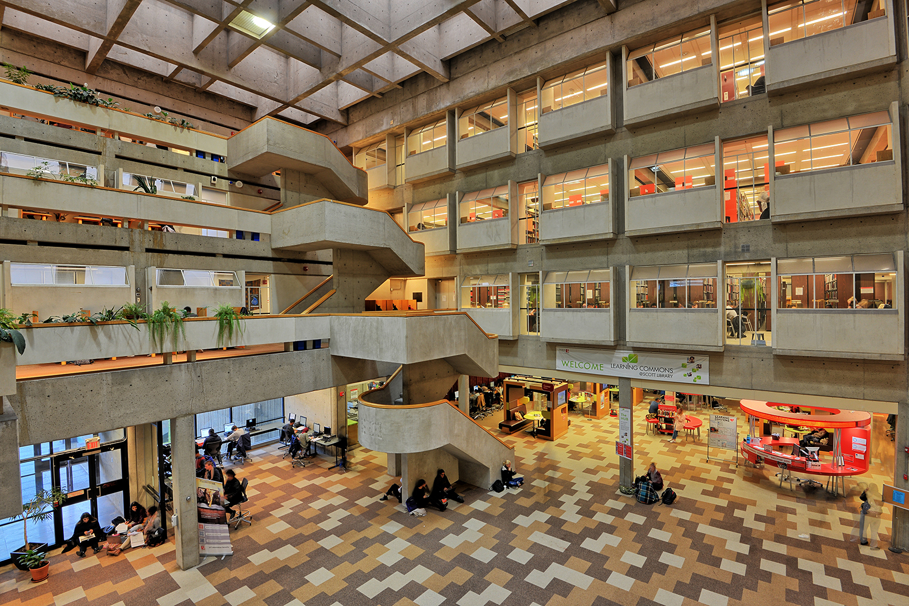
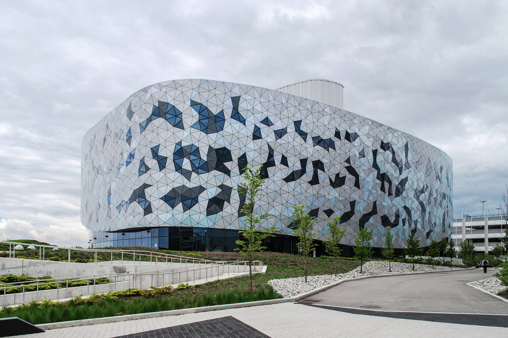

Authors name
Table of Content
- Introduction
- Literature Review
- Contribution
- Methodical design
- Experimental results and discussion
- Conclusions and future work
- Bibliography
Introduction
Suspendisse sodales velit ut quam ultricies pharetra at et ipsum. Donec mauris enim, hendrerit vel tincidunt quis,
auctor vitae lacus. Vestibulum tincidunt nulla viverra nunc vulputate, vitae condimentum mi iaculis. Phasellus at
commodo eros. Quisque porta posuere varius. Donec cursus tellus non nisl bibendum, molestie aliquet orci pretium. In
scelerisque, odio a malesuada mattis, dolor lacus ullamcorper ex, nec convallis ligula magna at arcu. In auctor
mauris sed sagittis vehicula. Pellentesque scelerisque erat nec odio molestie, dapibus accumsan felis commodo.
Aliquam dignissim, sapien nec pulvinar varius, velit sem dapibus massa, in eleifend ex elit vel turpis. Suspendisse
maximus elit in congue interdum. Pellentesque habitant morbi tristique senectus et netus et malesuada fames ac
turpis egestas. Duis rhoncus orci non sapien faucibus, eget luctus libero ullamcorper. Sed condimentum purus leo,
vel rutrum neque tincidunt eget.
Literature Review
Vivamus lacinia massa vel faucibus ullamcorper. Ut vel malesuada ex, vel molestie massa. Donec sit amet diam odio.
Sed cursus arcu ut tincidunt mollis. Vestibulum ante ipsum primis in faucibus orci luctus et ultrices posuere
cubilia curae; Etiam tristique dolor ac nulla dictum, at posuere magna finibus. Phasellus tincidunt odio sed euismod
pulvinar. Suspendisse auctor justo at mauris pellentesque mollis. Sed eleifend justo eget tempus efficitur. Nunc id
fringilla lorem. Phasellus tristique, velit id tempus fringilla, ligula ipsum dapibus odio, in porta libero libero
ut magna. Proin commodo lectus magna, non ultricies mauris vulputate eget. Nullam tincidunt fringilla lobortis.
Curabitur vulputate sagittis semper. Nullam scelerisque massa nisl, in vestibulum velit tincidunt ac. Previous work
by (Happel, 2016)showed the result.
Nulla posuere metus ut ligula hendrerit, tincidunt euismod eros faucibus. Morbi vel semper sem, nec pulvinar augue.
Nunc scelerisque eros sit amet risus viverra, auctor ullamcorper dui maximus. Proin tempus mi ut elit dignissim, ut
ultricies nisl tincidunt. Aliquam eleifend tincidunt nisi. Ut dictum malesuada tortor. Maecenas mattis sem mi, sed
finibus mauris porta eget. Vestibulum sollicitudin ipsum blandit, placerat magna nec, suscipit dolor. Previous work
(Armstrong, 2020)" showed the result.
Contribution
Maecenas id imperdiet leo, quis scelerisque metus. Ut posuere cursus libero id fringilla. Fusce lacinia, mauris quis
blandit sagittis, massa tortor aliquet libero, sit amet tempor elit nisi hendrerit neque. Quisque lectus felis,
blandit in diam nec, tempor pulvinar odio. Aliquam porta mi in semper sodales. Vestibulum sit amet libero mattis,
aliquam dolor tristique, ullamcorper lorem. Duis faucibus, arcu a venenatis dapibus, felis ipsum fringilla diam,
eget faucibus metus mi nec nibh. Quisque vestibulum tempor enim sit amet venenatis. Suspendisse nisi purus,
tristique vitae faucibus sed, cursus nec orci. Sed in blandit metus. Nam facilisis fringilla faucibus. Sed dolor
lorem, euismod sed orci nec, dapibus sagittis neque. Nulla facilisi. Praesent convallis consectetur est, nec tempor
metus convallis quis. In eros tortor, consequat quis blandit at, aliquet eu purus. Aenean vel dolor tempus, iaculis
ligula id, vehicula purus. Experimental results are given in the Results and Discussion
section. Textbook can be
found in bookstore on campus.
Methodical design
Donec vitae nunc elementum, volutpat erat vitae, consectetur felis. Praesent condimentum massa purus, vitae lacinia
lectus pellentesque sit amet. Donec molestie malesuada sagittis. Praesent in scelerisque nisl, elementum faucibus
risus. Mauris faucibus tellus et dui pretium elementum. Mauris risus dui, pellentesque fermentum pharetra consequat,
feugiat ac sapien. Pellentesque consequat purus id nibh dictum, id congue justo bibendum. Praesent eleifend nec
augue ut mollis. Praesent vel pellentesque lectus, eleifend aliquet ligula. Cras efficitur tempus massa non gravida.
Nam nibh ligula, suscipit et pretium sed, hendrerit quis lorem.
Donec nec magna dapibus libero tristique tincidunt a et metus. Mauris ut dignissim nisl. Mauris placerat posuere
sapien. In et porta mauris. Nunc a nisi in mauris porttitor blandit. Aliquam in interdum est. Curabitur vitae orci
convallis, viverra eros ut, elementum odio.
Procedures
Duis ullamcorper et ex nec maximus. Vestibulum et efficitur metus. Quisque eu sapien dapibus, rhoncus sapien ac,
consectetur mi. Etiam vestibulum elementum metus, nec laoreet felis ultrices ut. Sed luctus mi quam, ac consectetur
sapien egestas euismod. Praesent at pulvinar nunc. Vestibulum bibendum scelerisque nisl et egestas.
Implementation
Donec vel nibh vitae velit ultrices pulvinar quis sed nibh. Suspendisse a dui tempus tortor imperdiet dignissim at
nec neque. Maecenas mauris massa, fringilla vel ultricies sed, mattis ullamcorper ipsum. Nam non libero at est
sollicitudin euismod. Nunc cursus porttitor lacus, quis commodo ligula dapibus eu. Integer convallis dolor eget
aliquam faucibus. Aenean eu nisl a arcu laoreet egestas. Nunc tincidunt, tortor a laoreet faucibus, velit nunc
sollicitudin eros, et suscipit nibh turpis a ligula. Maecenas est dui, bibendum a leo dictum, tempus lobortis ex.
Nulla congue euismod ornare. Aliquam fringilla felis et diam accumsan, sit amet cursus purus pretium. Morbi id augue
in eros mattis cursus non sit amet turpis.
Mauris augue leo, fringilla sed ex at, interdum efficitur massa. Fusce nec augue tortor. Cras finibus egestas tellus
vitae elementum. Donec tincidunt porttitor risus, nec lacinia ante vehicula consequat. Nunc eleifend dui nunc, id
porta orci condimentum non. Phasellus tellus tellus, consectetur at mauris sed, dapibus faucibus ante. Mauris
tristique enim a facilisis cursus. Sed venenatis, sapien a commodo elementum, magna nunc laoreet dui, sed tempor
massa quam eu neque.
Algorithm 1

Figure 1: Scott library
Proin hendrerit, est pellentesque consequat egestas, augue sem pulvinar nunc, at elementum tortor augue nec augue.
Nam pretium turpis quis ligula cursus, id facilisis tellus volutpat. Nam at elit vel ligula accumsan rutrum ac vitae
urna. In hac habitasse platea dictumst. Aliquam placerat et lorem ac accumsan. Nam
condimentum lorem eget lorem ornare, vitae efficitur augue ultrices. Suspendisse potenti. Sed vestibulum ipsum
risus, eget condimentum elit congue non. Sed a pretium arcu. Integer a nisi eu nisi posuere facilisis. Praesent
sodales, libero sed luctus gravida, metus mauris vestibulum dolor, sed tristique mi eros sit amet augue. Morbi ut
mauris est. Donec varius eros nec rhoncus dapibus. Aliquam ut ex velit. Vestibulum quis massa nisl.
Algorithm 2

Figure 2: Bergeron Center
Proin enim purus, finibus vel tincidunt ac, lobortis vel leo. Aliquam ullamcorper neque id pellentesque
placerat.
Suspendisse dapibus quis augue sit amet fermentum. Aenean pretium quam in justo dictum, at feugiat dui
placerat.
Proin maximus scelerisque egestas. Nulla mauris nisl, fringilla non interdum non, dapibus nec ex. Donec
vestibulum
risus vitae consequat consequat. Proin varius nisl at turpis efficitur congue in non diam. Sed et
sodales lectus.
Donec in nisi ultricies, malesuada nulla convallis, cursus eros. Donec tristique nulla magna, sit amet
blandit
mauris finibus et. Cras ut sapien non erat laoreet consequat. Donec elit ex, dictum ut elit id, sodales
luctus enim.
Morbi massa massa, feugiat sed sapien quis, sodales scelerisque quam. Maecenas sit amet auctor sem.
Proin viverra
malesuada erat, non dapibus magna consequat quis.
Experimental Results and Discussions
Duis vitae egestas mi. Aenean lobortis magna nec pretium faucibus. Curabitur eleifend tempor ornare.
Curabitur
euismod metus sit amet sem consequat aliquet. Sed eget lacus vitae diam ullamcorper pellentesque quis ac
tellus. Sed
consequat velit massa, ut placerat nisi vehicula in. Donec aliquam porttitor libero. Vivamus facilisis
turpis ac
metus lobortis pharetra. In mollis tellus eu ipsum interdum rhoncus. Nunc consectetur, enim sed sodales
aliquam,
lacus nibh feugiat felis, sed feugiat nibh odio vitae orci. Ut tellus purus, blandit eu leo eget,
suscipit finibus
dui. Sed consectetur dignissim semper. Curabitur in risus a orci tempor consectetur. Nulla facilisi.
Mauris mattis,
dui non sodales semper, justo tellus gravida dolor, ac suscipit augue odio non dolor. Mauris porta est
dolor, at
tempor massa ornare vitae.
Table 1: World table Algorithms
| Result1 |
| Algorithm1 |
Algorithm2 |
| Test 1 |
2 |
Test 2 |
4 |
| 3 |
5 |
In at felis eu odio lobortis mattis et in ex. Pellentesque laoreet quam libero, ac auctor enim sagittis
ac. Aenean
et ex tristique, ultrices felis a, placerat ante. Suspendisse feugiat tempor ipsum non dignissim.
Quisque convallis,
mi non maximus luctus, leo nunc pretium elit, et rhoncus odio dui laoreet neque. Nam dictum sapien
neque, ac lacinia
lacus cursus ut. Nunc vel mauris nulla. Ut in malesuada tortor. Nullam rhoncus vitae massa sed
tincidunt. Integer
vulputate semper dolor ac efficitur. Vestibulum fringilla interdum ex, id ultrices sapien luctus quis.
Duis non eros a ipsum pulvinar gravida. Nulla lacus nunc, hendrerit at consequat eget, maximus id dui.
Pellentesque
porttitor turpis urna, ac dapibus metus cursus quis. Ut justo ante, eleifend id dictum ac, iaculis vel
lacus.
Phasellus tristique est sed dolor hendrerit, in iaculis magna porta. Sed venenatis turpis turpis, quis
elementum
felis convallis at. In feugiat, dolor in posuere elementum, augue velit suscipit quam, in finibus arcu
ligula vel
ante. Praesent id augue quam. Quisque volutpat dui sed convallis fermentum.
Conclusions and future work
Morbi vehicula, ante vel consectetur dapibus, arcu libero dapibus nisi, non maximus diam eros vel dui.
Suspendisse
at interdum arcu. Ut non ex eget ligula mollis tristique vel sed ex. Sed malesuada, nulla vel aliquet
ullamcorper,
justo augue faucibus sem, eget pharetra nulla mi at ipsum. Curabitur felis lacus, pharetra sed sapien
at,
ullamcorper lacinia orci. Aliquam faucibus ex augue, ut tincidunt massa pulvinar et. Donec sagittis
suscipit augue,
vel vehicula nulla mollis ac. In hac habitasse platea dictumst. Proin tempus felis mauris, eget posuere
ante
faucibus eget. Aliquam libero libero, tristique non ipsum sit amet, placerat luctus ex. Interdum et
malesuada fames
ac ante ipsum primis in faucibus. Integer porttitor mollis euismod. In eleifend eu felis eget pretium.
Etiam sed
gravida massa. Suspendisse sit amet lectus quis sem imperdiet egestas vel et ante.
Bibliography
Armstrong, H., 2020. How to learn non-major EECS courses. Advanced Education, 2(5), pp.
100-115.
Happel, P., 2016. New pedagogical approach to first year EECS courses. 3 ed. Toronto: Yorku
Publishing
House.